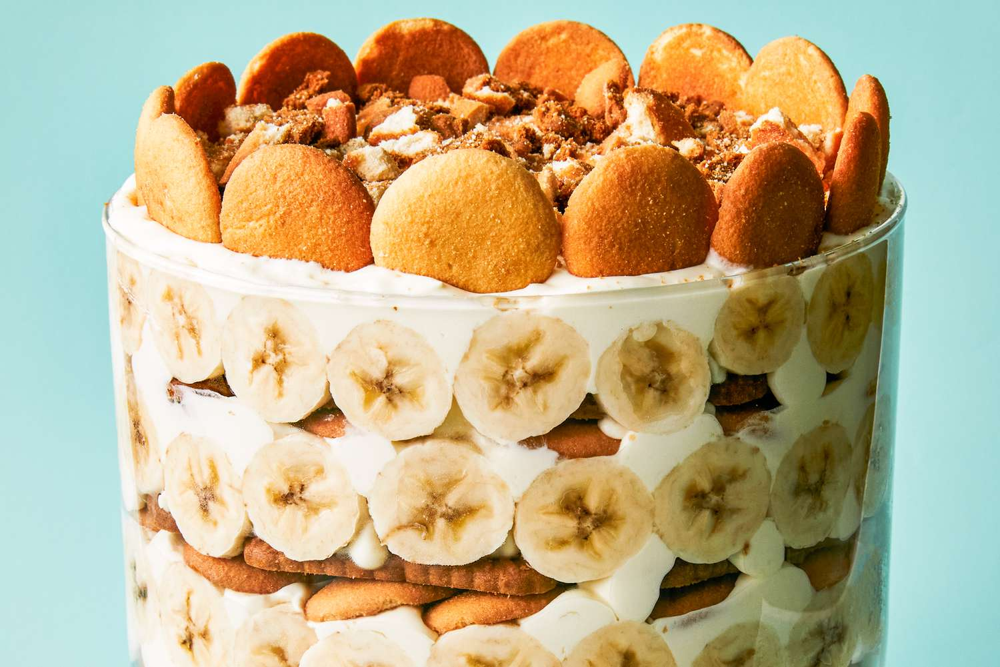

Yummy Biscof Bannana pudding cake😋🍌

Description
The Bannana is smooth and slides right into your stomach. While the
Ingredients!!
Steps
- Beat the pudding and pie filling mix and whole milk in a medium bowl with an electric mixer on low speed. Until the pudding and pie mix is combined and a little bit thickened(about 2 minutes). Keep it in a room temperature until the batter goes down in the bowl(about 5 minutes)
- In seperate large bowl beat cream and powdered sugar with an electric mixer on medium-high speed (about 5 minutes).Carefully fold sweetened condensed milk, vannilla, and pudding mixture until everything is combined together.
- In seperate ziplock bags crush 5 vanilla wafers(or more/less if you want) and 4 biscoff cookies; set it aside for garnishing. Reserve 16 of the remaining vanilla wafers.
- Arrange another 16 of the vanilla wafers